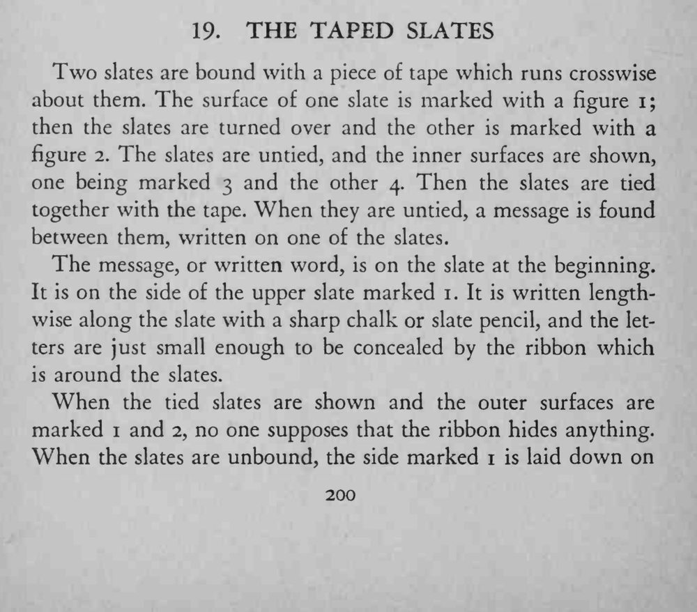
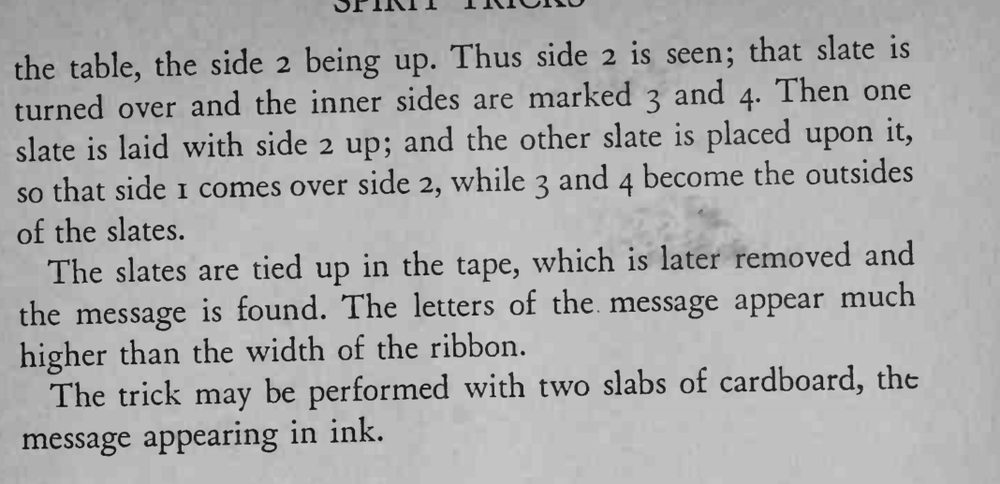

两块石板用带子横向捆住，外面依次标上一、二、三、四；解开带子，石板中间出现了事先写好的信息。
字迹必须比带子窄、捆带时要完全压住，也可用两块硬纸板以墨水写消息。


Two slates are bound with a piece of tape which runs crosswise about them. The surface of one slate is marked with a figure i; then the slates are turned over and the other is marked with a figure 2. The slates are untied, and the inner surfaces are shown, one being marked 3 and the other 4. Then the slates are tied together with the tape. When they are untied, a message is found between them, written on one of the slates. The message, or written word, is on the slate at the beginning. It is on the side of the upper slate marked 1. It is written lengthwise along the slate with a sharp chalk or slate pencil, and the letters are just small enough to be concealed by the ribbon which is around the slates. When the tied slates are shown and the outer surfaces are marked 1 and 2, no one supposes that the ribbon hides anything. When the slates are unbound, the side marked 1 is laid down on the side 2 being up. Thus side 2 is seen; that slate is the table, turned over and the inner sides are marked 3 and 4. Then one laid with side 2 up; and the other slate is placed upon it, slate is so that side 1 comes over side 2, while 3 and 4 become the outsides of the slates. The slates are tied up in the tape, which is later removed and message found. The letters of the message appear much the is higher than the width of the ribbon. The may be performed with two slabs of cardboard, the trick message appearing in ink.